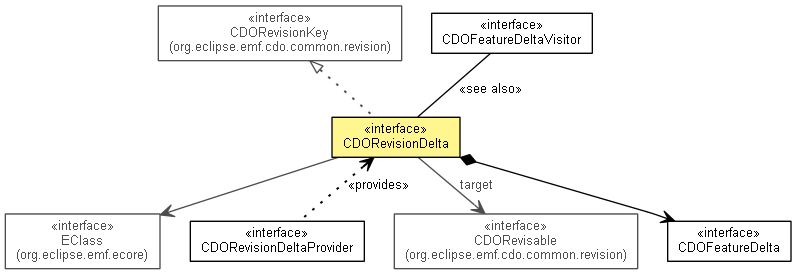

org.eclipse.emf.cdo.common.revision.delta
Interface CDORevisionDelta
- All Superinterfaces:
- CDOBranchVersion, CDOIDAndVersion, CDORevisionKey
- All Known Subinterfaces:
- InternalCDORevisionDelta
- public interface CDORevisionDelta
- extends CDORevisionKey

Represents the change delta between two revisions of a CDO object. The detailed
feature deltas are returned by the getFeatureDeltas() method.
- Since:
- 2.0
- No Implement
- This interface is not intended to be implemented by clients.
- No Extend
- This interface is not intended to be extended by clients.
|
Field Summary |
static CDORevisionDelta |
DETACHED
This constant is only passed into conflict resolvers to indicate that a conflict was caused by remote detachment of
an object. |
DETACHED
static final CDORevisionDelta DETACHED
- This constant is only passed into conflict resolvers to indicate that a conflict was caused by remote detachment of
an object. Calling any method on this marker instance will result in an
UnsupportedOperationException being
thrown.
- Since:
- 4.0
getEClass
EClass getEClass()
- Since:
- 3.0
getTarget
CDORevisable getTarget()
- Since:
- 4.0
size
int size()
- Since:
- 4.2
isEmpty
boolean isEmpty()
- Since:
- 3.0
copy
CDORevisionDelta copy()
- Since:
- 4.0
getFeatureDelta
CDOFeatureDelta getFeatureDelta(EStructuralFeature feature)
- Since:
- 4.0
getFeatureDeltas
List<CDOFeatureDelta> getFeatureDeltas()
apply
void apply(CDORevision revision)
- Applies the
feature deltas in this revision delta to the data
of the given revision.
The system data of the given revision, e.g. branch point or branch
version of the given revision are not modified.
accept
void accept(CDOFeatureDeltaVisitor visitor)
accept
void accept(CDOFeatureDeltaVisitor visitor,
Predicate<EStructuralFeature> filter)
- Since:
- 4.2
Copyright (c) 2011, 2012 Eike Stepper (Berlin, Germany) and others.